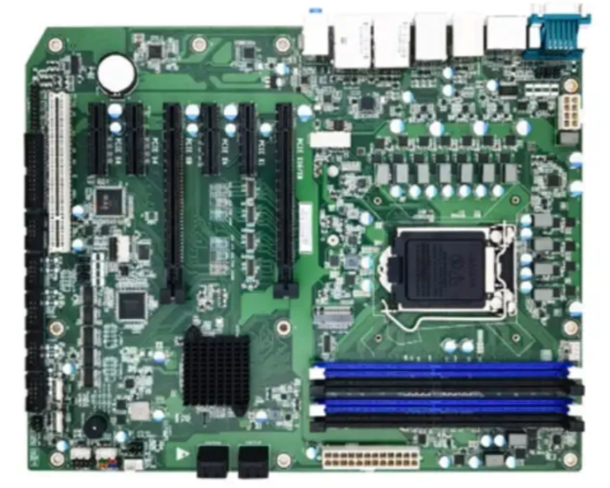
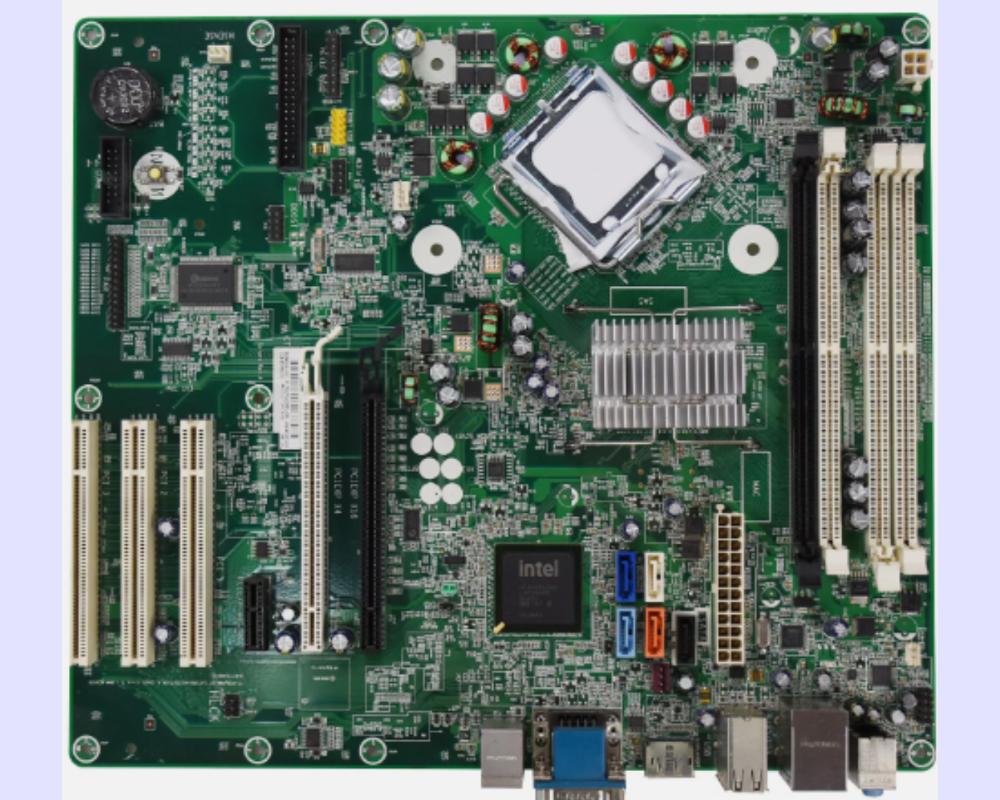
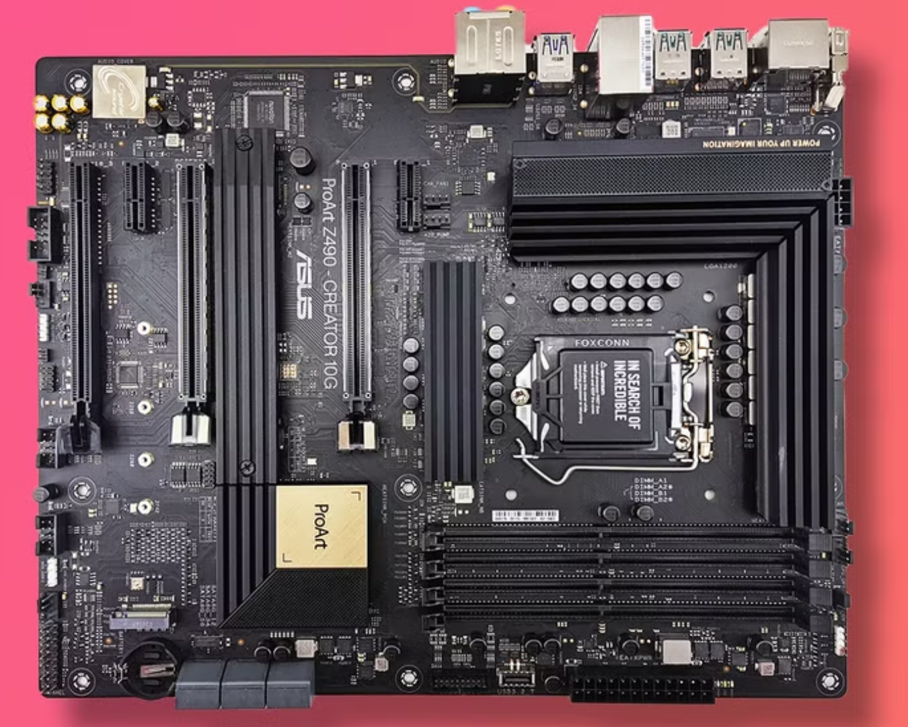
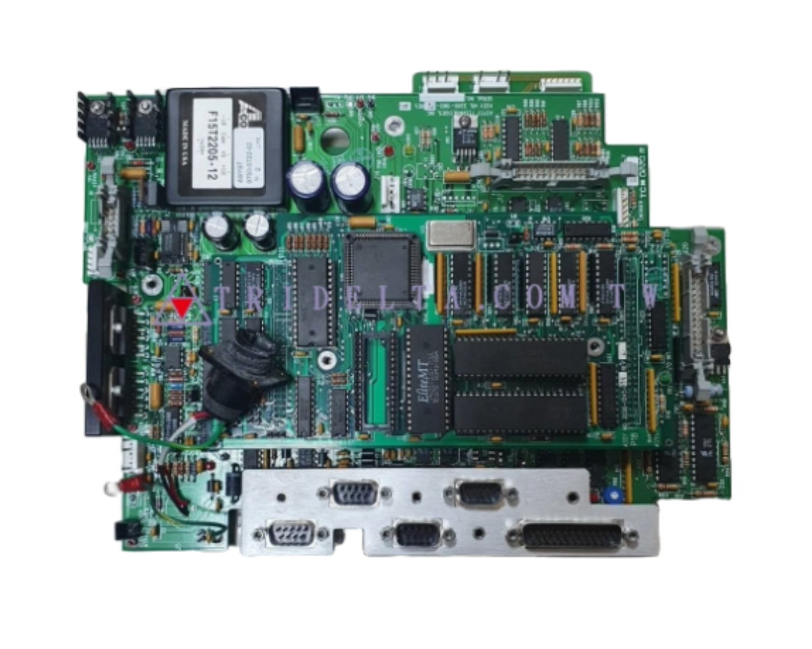
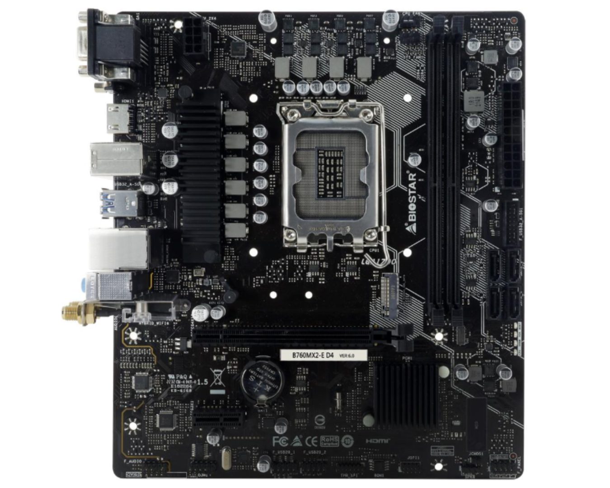
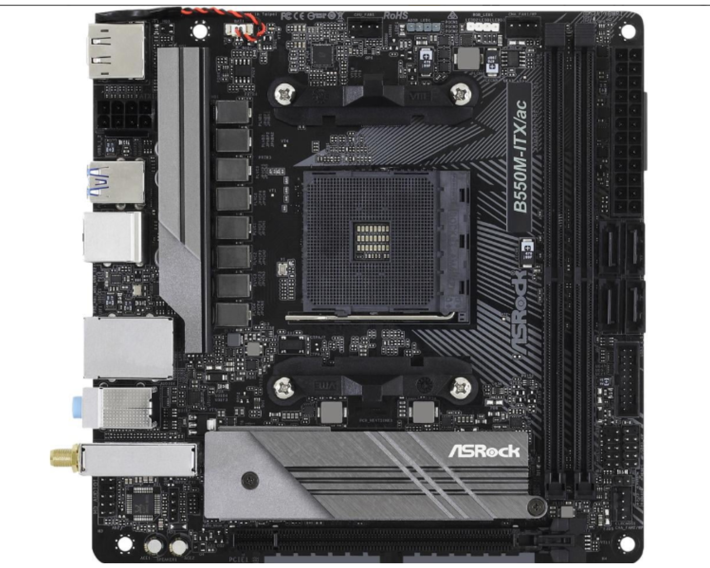
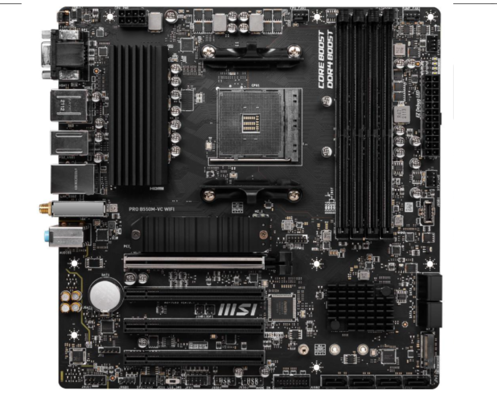
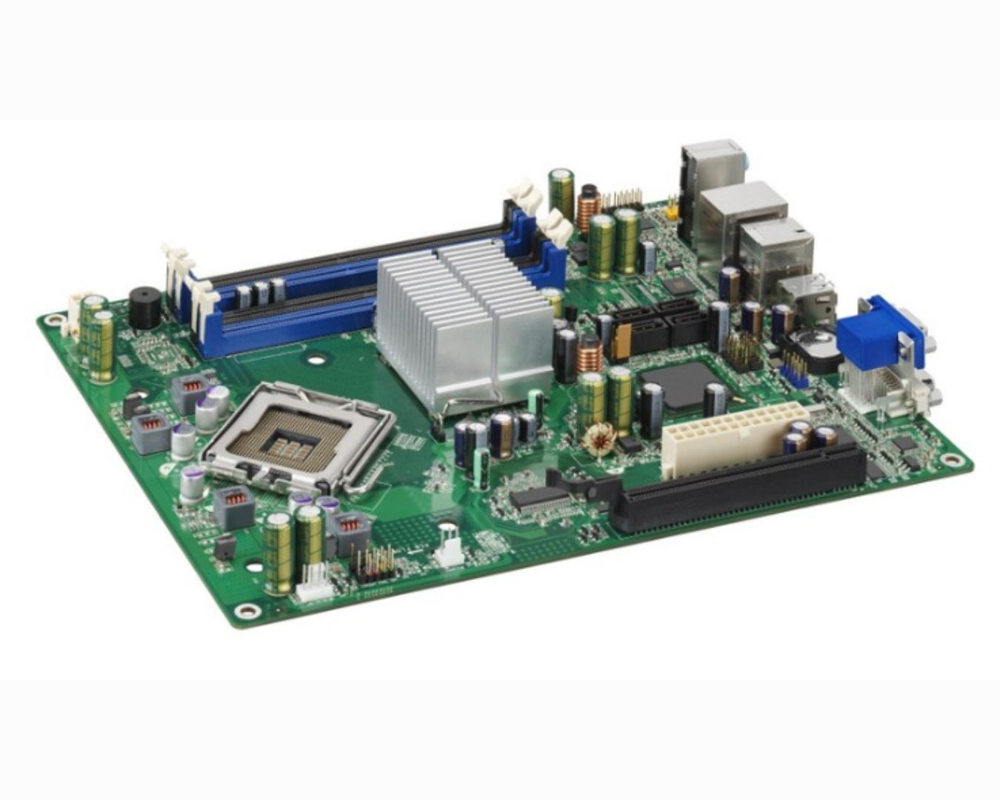

AT Motherboard
The Advanced Technology Motherboards or the AT Motherboards. This type of motherboard is one of the oldest of the variants, being developed in 1984, it is one of the first few motherboards used by many. As expected, while being functional, the features it gives are relatively dated, hence, being used less frequently in the modern day. On the contrary, we can see some features being continued for the preceding types of motherboards.

ATX Motherboard
The Advanced Technology Extended Motherboards or the ATX Motherboards, which was the first upgrade from the AT motherboards. This type of motherboard is a step up from what AT motherboard with it being more reliable as well as being more power efficient than the AT motherboards. Other than that, there wasn't really much of a big impact, but ATX motherboards are more advanced than the AT motherboards.

BTX Motherboard
The Balanced Technology Extended or the BTX motherboard was a motherboard developed by Intel themselves, meaning, most models of this type of motherboard are generally limited to only being compatible with Intel chipsets. While there are BTX motherboards that are compatible with AMD, it is limited and that is one of the reasons for its failure. Alongside incompatibilities, the BTX failed to reach the audience as it was clear that ATX motherboards are better in overall performance. While BTX has better cooling, it was clear that ATX would be better.

EATX Motherboard
The Extended ATX (EATX) Motherboards are ATX motherboards that have been improved both in size and their functionalities. The primary difference between these 2 are the sizes, but the adjustment of sizes allowed the EATX motherboards to be a step up from the standard ATX as it allows more space for more functionalities and better performance options to be implemented.

LPX Motherboard
The Low-Profile Extension or LPX Motherboard was a popular motherboard back in the 1990s. According to the name itself, its goal was to reduce the size and the cost of desktop computers. While it was not a motherboard that stood out, there was also nothing bad out from it, hence, despite being no longer used in today's age, its principles and design goals have influenced other motherboard designs, hence, making it still somewhat relevant for today's motherboard market.

Micro-ATX Motherboard
The Micro-ATX Motherboard, from the name itself, was an ATX motherboard that was reduced in size for compactness. From the size of 304 mm x 244 mm from the ATX, the Micro-ATX Motherboard has managed to shrink it down to 244 mm by 244 mm. For compactness, it is a great option as the reduction of size did not sacrifice any functionality as enough expansion slots are provided in order to get close to a full ATX Motherboard.

Mini-ITX Motherboard
The Mini Information Technology Extended Motherboard or the Mini-ITX Motherboard is an even smaller motherboard sizing at around 170 mm x 170 mm in size. This makes it even more compact than the Micro-ATX Motherboard. It is a compact sized motherboard that is specifically designed for computer builds that require full-featured capabilities in a compact sizing. They are quite popular with the general consumers as well as industrial computing systems.

Mini-ATX Motherboard
The Mini-ATX from the name itself, is yet again a smaller variant of the ATX Motherboard. This motherboard is even more compact than the Micro-ATX with it having the size of around 284 mm by 208 mm. And the same as the Micro-ATX, despite its size, it still provides ample expansion slots for it to be comparable to standard ATX Motherboards.

Pico-BTX Motherboard
The Pico-BTX is the smaller variant of the BTX Motherboard. From the size of the BTX being 325 mm x 266 mm, it was reduced to 203 mm x 266 mm. It essentially functions quite the same as the BTX motherboard despite its size, but just like the BTX, there are more preferred motherboard form factors which makes the Pico-BTX just shy of being a popular and widely used motherboard.